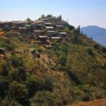
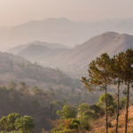
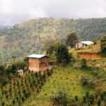
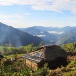

Myanmar is well known for trekking. One of the most popular trekking in Burma is Kalaw, with its unique hillsides and small village clusters. If you are a good hiker, this is the right choice. Trekking from Kalaw to Inle Lake was definitely one of the best tourist attraction in Myanmar. Along the trek, you will get a chance to see what life was like before we ever had to rely on electricity, cars, and everything else we take for granted in this day and age. One of the amazing experience is the insight into the lives of the Shan people.
    Get Enquiry Now